library(tidyverse)
library(janitor)Final Analysis
Goals of this notebook
The purpose of this notebook is to combine Maria and Olivia’s analyses into one easily digestible notebook. For a closer look at what each of us did, you can look at our individual cleaning notebooks.
We worked together to answer these questions:
- Who is being arrested?
- Who is doing the arresting?
- What kinds of crimes are being committed?
- How many are drug crimes?
- What kind of drugs? Is it fentanyl like Abbott says?
Let’s get into it.
Setup
We’ll load our libraries.
Importing cleaned data
Then we’ll import our cleaned data from our combined data sets.
olsdata <- read_rds("data-processed/02-combine.rds")
olsdata# A tibble: 58,635 × 25
primary_key charge charge_count ethnicity charge_date person_age
<chr> <chr> <dbl> <chr> <date> <dbl>
1 TX20234 Poss Marij < 2OZ 1 H 2023-01-03 27
2 TX20234 Poss CS PG 2 >= 1G… 1 H 2023-01-03 27
3 TX20235 WARRANT: ASSAULTIV… 1 H 2023-01-21 50
4 TX20237 Criminal Trespass 1 H 2023-01-22 37
5 TX20238 Criminal Trespass 1 H 2023-01-22 NA
6 TX20239 Criminal Trespass 1 H 2023-01-22 26
7 TX202310 Criminal Trespass 1 H 2023-01-22 21
8 TX202311 Criminal Trespass 1 H 2023-01-22 NA
9 TX202312 Criminal Trespass 1 H 2023-01-22 29
10 TX202313 Criminal Trespass 1 H 2023-01-22 NA
# ℹ 58,625 more rows
# ℹ 19 more variables: person_first_name <chr>, person_second_name <chr>,
# person_third_name <chr>, person_last_name <chr>, officer_id <dbl>,
# arrest_county <chr>, code <chr>, severity_code <chr>,
# severity_code_clean <chr>, person_race_abbr <chr>,
# person_gender_abbr <chr>, arrest_state <chr>, arrest_division <chr>,
# arrest_id <dbl>, arrest_urn <chr>, arresting_officer <chr>, …Categorizing charges
The first thing we want to do is create categories for these charges. We won’t use them immediately to answer our demographics questions, but it will come in handy later when we look into each race and the charge breakdowns within them. We’ll also use them later to break down specific charge categories, like smuggling and drug arrests.
Within Operation Lone Star, there are 490 different types of charges. Therefore, we decided to break down the charges into 11 different categories. Here’s a key that describes each category.
Operation Lone Star Charge Category Key:
- Drug = Any charge that relates to possession or manufacturing of drug, as well as any drug-related charges like stash house charges. Something to note is that some charges are both “drug/weapon” offenses.
- Weapon = Any charge relating to possession/use of unauthorized firearms or weapons.
- Warrant/Conspiracy = General charges.
- Smuggling/Trafficking of Persons = Human trafficking or smuggling charges. This category also includes charges for smuggling both persons and firearms.
- Trespassing = Includes all types of trespassing charges.
- Immigration Other = Immigration related charges.
- Evasion/Fleeing = Escaping authority charges.
- Organized Crime
- Tampering = Charges related to tampering with evidence.
- Unauthorized Use of Vehicle
- Money Laundering
Creating categories
cat_ols <- olsdata |>
mutate(
charge_cat = case_when(
str_detect(
charge,
"Drug|CS|Cs|Mari|DRUG|MARI|Marj|MARJ|Man|Subs|Stash|Chem"
) ~ "Drug",
str_detect(
charge,
"Smugg|SMUGG|Trafficking|TRAFFICKING|Trans|Bringing In"
) ~ "Smuggling/Trafficking of Persons",
str_detect(charge, "Firearm|FIREARM|gun|GUN|Amm|Arm|Weapon|WEAPON") ~ "Weapon",
str_detect(charge, "Launder|LAUNDER") ~ "Money Laundering",
str_detect(charge, "Trespass|TRESPASS") ~ "Trespassing",
str_detect(charge, "Alien|ALIEN|Visa|VISA|IMMIGRATION|Immigration") ~ "Immigration Other",
str_detect(charge, "Evad|EVAD|Flee|FLEE") ~ "Evasion/Fleeing",
str_detect(charge, "Organized|Enterprise") ~ "Organized Crime",
str_detect(charge, "Tamp|TAMP") ~ "Tampering",
str_detect(charge, "Unauth") ~ "Unauthorized Use of Vehicle",
str_detect(charge, "Warrant|WARRANT") ~ "Warrant",
str_detect(charge, "Conspiracy|CONSPIRACY") ~ "Conspiracy"
,
.default = "Other"
))
cat_ols |>
count(charge_cat, charge)# A tibble: 490 × 3
charge_cat charge n
<chr> <chr> <int>
1 Conspiracy Attempt And Conspiracy 7
2 Conspiracy Attempt And Conspiracy (21 Usc Sec 963) 1
3 Conspiracy Attempt And Conspiracy (Other Title 21 Violations) 4
4 Conspiracy Conspiracy (General/Other Title 21) 10
5 Drug (FENTANYL) POSS CS PG 1 <1G 1
6 Drug (HEROIN) POSS CS PG 1 <1G 1
7 Drug Conspiracy To Possess With Intent To Distribute Controlled … 201
8 Drug Conspiracy To Sale/Manfct/Dist Controlled Substance 122
9 Drug Controlled Substance Offenses-Felony 110
10 Drug Controlled Substance Offenses-Misdemeanor 11
# ℹ 480 more rowsThen we’ll do a quick group_by, summarize, arrange to see the categories and allow us to visualize it in a second.
cat_chart <- cat_ols |>
group_by(charge_cat) |>
summarise(charge_num = n()) |>
arrange(desc(charge_num))
cat_chart# A tibble: 13 × 2
charge_cat charge_num
<chr> <int>
1 Drug 23233
2 Trespassing 11439
3 Smuggling/Trafficking of Persons 10965
4 Evasion/Fleeing 4619
5 Warrant 4158
6 Weapon 1967
7 Unauthorized Use of Vehicle 853
8 Tampering 698
9 Organized Crime 342
10 Money Laundering 182
11 Immigration Other 152
12 Conspiracy 22
13 Other 5Now that we’ve got that, let’s make a chart to visualize it. We’ll use ggplot, pull cat_chart back up, and create a simple bar chart. We reordered the bars so that the category is on the y axis so the readability is better. Then we adjusted the number labels so you can read them better and gave the bars a color. Now we can see which categories are the most prolific.
ggplot(cat_chart, aes(x = charge_num, y = reorder(charge_cat, charge_num))) +
geom_col(fill = "#0AB7F7") +
geom_text(aes(label = charge_num, hjust = ifelse(charge_num > 1967, 1.1, -.1)),
color = "black") +
labs(
title = "What is Operation Lone Star Actually Doing?",
x = "Number of Charges",
y = "Charge Category",
subtitle = str_wrap("This chart looks at the different types of charges under Operation Lone Star. Notably, the most popular type of charge is drug-related."),
caption = "Source = Operation Lone Star Data",
)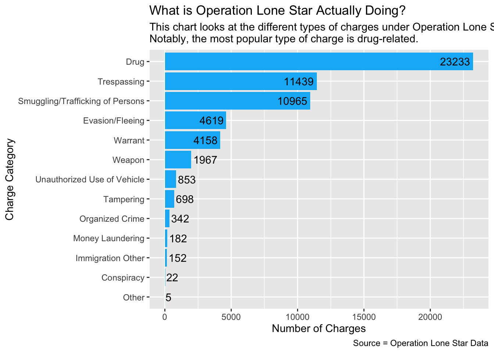
From this simple chart, we can see a couple preliminary takeaways:
- At least 23,233 charges under Operation Lone Star are drug-related.
- Categories like money laundering, tampering with evidence and unauthorized use of vehicle are more common than immigration related charges.
Now that we have that for later, we’ll get into the demographics data.
Demographics
The first set of questions we want to answer look at demographics - who is being arrested under OLS and who is doing that arresting.
Who is being arrested?
Let’s look at sex, ethnicity, age, and race.
Sex:
We call our data, group by the arrested person’s sex, then summarize and arrange that so we can see it in descending order. We’ll put that into a bucket so we can refer to it later in our visual component.
olsgender <- olsdata |>
group_by(person_gender_abbr) |>
summarise(appearances = n()) |>
arrange(desc(appearances))
olsgender# A tibble: 4 × 2
person_gender_abbr appearances
<chr> <int>
1 M 48297
2 F 10147
3 <NA> 180
4 U 11We can see that there’s an overwhelming majority of males being arrested under Operation Lone Star.
Creating a graph for sex demographics
ggplot(olsgender, aes(x = reorder(person_gender_abbr, appearances), y = appearances)) +
geom_col(stat = "identity") +
coord_flip() +
labs(
title = "Operation Lone Star arrests by sex",
subtitle = str_wrap("Operation Lone Star is a program launched by Texas Governor Greg Abbott to increase safety at the southern border of the state. Arrest data from the program shows that the number of males arrested is much higher than the number of females since the programs' inception in 2021."),
caption = "By Olivia Dilley",
x = "Sex of arrested individual",
y = "Number of arrests"
)Warning in geom_col(stat = "identity"): Ignoring unknown parameters: `stat`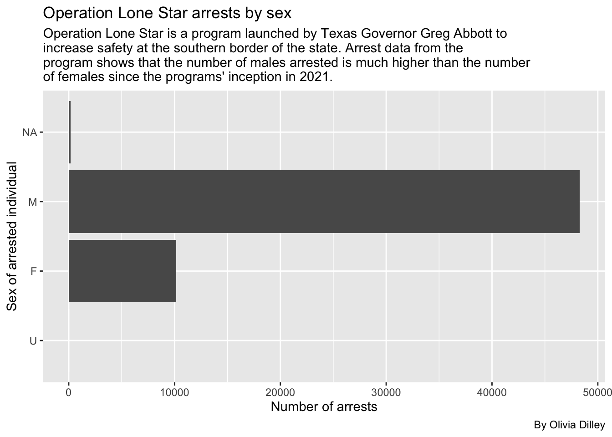
Ethnicity:
We’ll do the same procedure except using the ethnicity of the arrested person.
olsethnicity <- olsdata |>
group_by(ethnicity) |>
summarise(appearances = n()) |>
arrange(desc(appearances))
olsethnicity# A tibble: 4 × 2
ethnicity appearances
<chr> <int>
1 <NA> 41379
2 H 14302
3 N 2811
4 U 143We can see that the vast majority of rows in the data set didn’t have an ethnicity listed - this is because the newer system, VERSA, includes ethnicity, but SPURS did not. But for the cases where an ethnicity was listed, the majority of arrested people were Hispanic.
Creating a graph for ethnicity demographics
ggplot(olsethnicity, aes(x = reorder(ethnicity, appearances), y = appearances)) +
geom_bar(stat = "identity") +
coord_flip() +
labs(
title = "Operation Lone Star arrests by ethnicity",
subtitle = str_wrap("Arrest data from Operation Lone Star shows that the number of Hispanics arrested is much higher than the number of non-Hispanics since the programs' inception in 2021. Notable is the large number in the N/A category, which calls into question the practices used when recording data."),
caption = "By Olivia Dilley",
x = "Ethnicity of arrested individual",
y = "Number of arrests"
)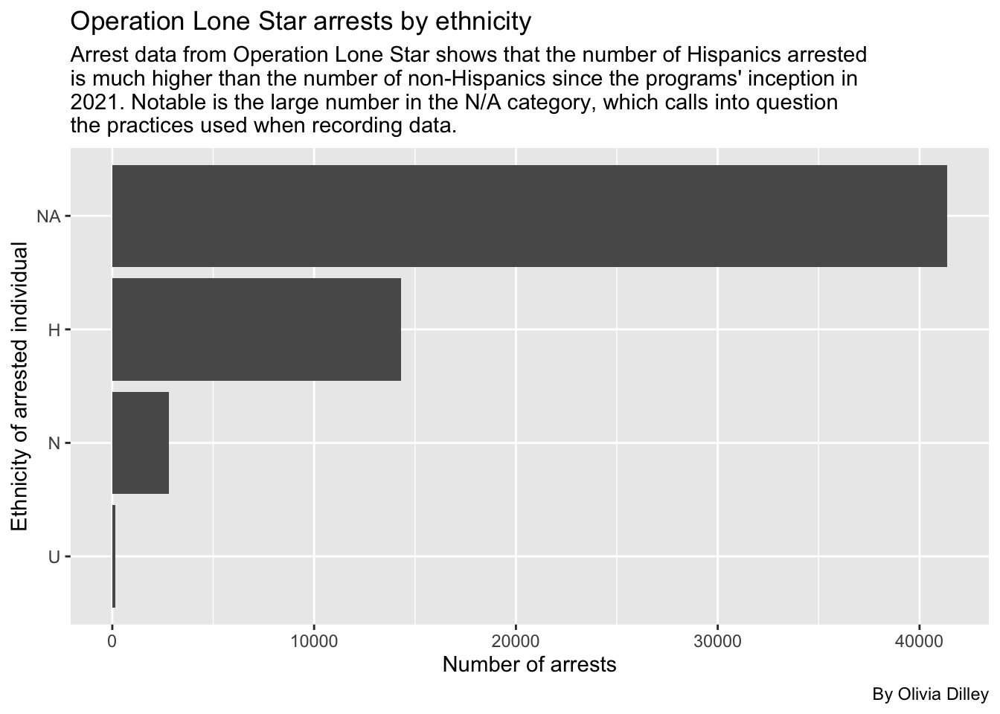
Age:
First we’ll call olsdata and group by the person’s age, summarize by appearances, and arrange in descending order to see what age’s have the most arrest instances. Then we’ll put that in a new bucket, olsage, for later reference.
olsage <- olsdata |>
group_by(person_age) |>
summarise(appearances = n()) |>
arrange(desc(appearances))
olsage# A tibble: 81 × 2
person_age appearances
<dbl> <int>
1 NA 6119
2 22 2462
3 20 2457
4 21 2378
5 24 2354
6 23 2341
7 19 2321
8 25 2206
9 26 2069
10 27 2014
# ℹ 71 more rowsNow, if you click through the data, you’ll see some obvious entering errors, like ages that are in the negatives and people that are between 1 and 943 years old. Because of this, we’ve decided to filter ages to between 10 and 100 to only incorporate cases that are most likely accurate age enterings.
olsagerefined <- olsage |>
filter(between (person_age, 10, 100))
olsagerefined# A tibble: 69 × 2
person_age appearances
<dbl> <int>
1 22 2462
2 20 2457
3 21 2378
4 24 2354
5 23 2341
6 19 2321
7 25 2206
8 26 2069
9 27 2014
10 28 1985
# ℹ 59 more rowsOnce we have this data, we’ll make a simple scatter plot with it using ggplot and geom_point.
ggplot(olsagerefined, aes(x = person_age, y = appearances)) +
geom_point() 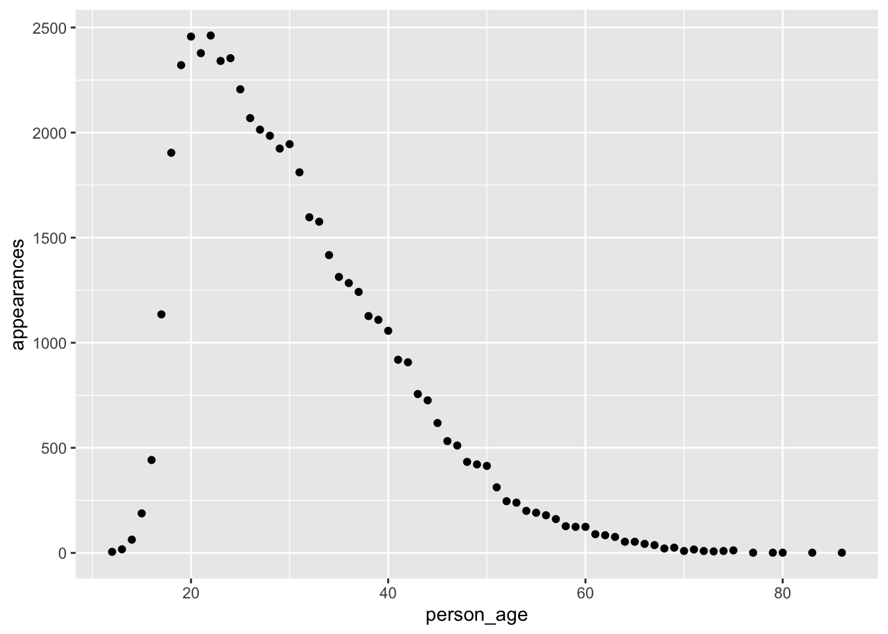
What’s interesting about this graph is that it closely reflects the age-crime curve which shows the rate of criminal activity as it corresponds with age.
Race:
Lastly for basic demographics, we’ll look at the race of people arrested in OLS.
olsrace <- olsdata |>
group_by(person_race_abbr) |>
summarise(appearances = n()) |>
arrange(desc(appearances))
olsrace# A tibble: 7 × 2
person_race_abbr appearances
<chr> <int>
1 H 44602
2 W 8822
3 B 4187
4 <NA> 857
5 A 98
6 U 67
7 I 2Creating a graph for race demographics
Now we’ll make a bar chart to check this out visually.
ggplot(olsrace, aes(x = reorder(person_race_abbr, appearances), y = appearances)) +
geom_bar(stat = "identity") +
coord_flip() +
labs(
title = "Operation Lone Star arrests by race",
subtitle = str_wrap("Arrest data from Operation Lone Star shows that the number of Hispanics arrested is much higher than any other race since the programs' inception in 2021."),
caption = "By Olivia Dilley",
x = "Race of arrested individual",
y = "Number of arrests"
)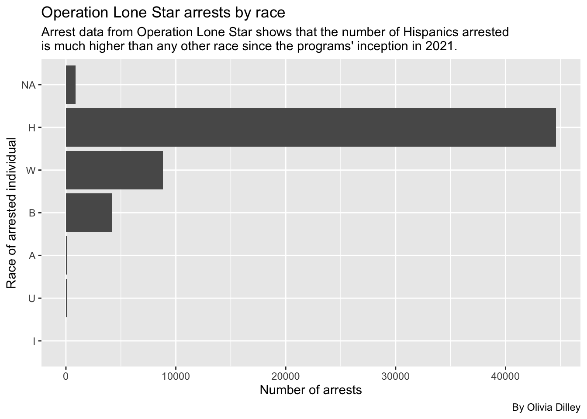
We cans see Hispanics are still the most-arrested in the OLS database.
Let’s break these down by each race to see what crimes are being committed the most.
Breaking down offenders’ charges by races
We’ll start with Black arrestees
blackarrests <- cat_ols |>
group_by(person_race_abbr, charge_cat) |>
filter(person_race_abbr == "B") |>
summarise(appearances = n()) |>
arrange(desc(appearances))`summarise()` has grouped output by 'person_race_abbr'. You can override using
the `.groups` argument.blackarrests# A tibble: 11 × 3
# Groups: person_race_abbr [1]
person_race_abbr charge_cat appearances
<chr> <chr> <int>
1 B Drug 1898
2 B Smuggling/Trafficking of Persons 1184
3 B Warrant 339
4 B Weapon 300
5 B Evasion/Fleeing 249
6 B Unauthorized Use of Vehicle 100
7 B Trespassing 41
8 B Tampering 34
9 B Organized Crime 31
10 B Money Laundering 10
11 B Conspiracy 1So Black people are most commonly getting arrested under OLS for drugs, then smuggling. Let’s make this a graph.
ggplot(blackarrests, aes(x = reorder(charge_cat, appearances), y = appearances)) +
geom_bar(stat = "identity") +
coord_flip() +
labs(
title = "Charge types for Black arrestees",
subtitle = str_wrap("Operation Lonestar arrest data shows Black people are being arrested mostly for drug and smuggling related charges."),
caption = "By Olivia Dilley",
x = "",
y = "Number of arrests"
)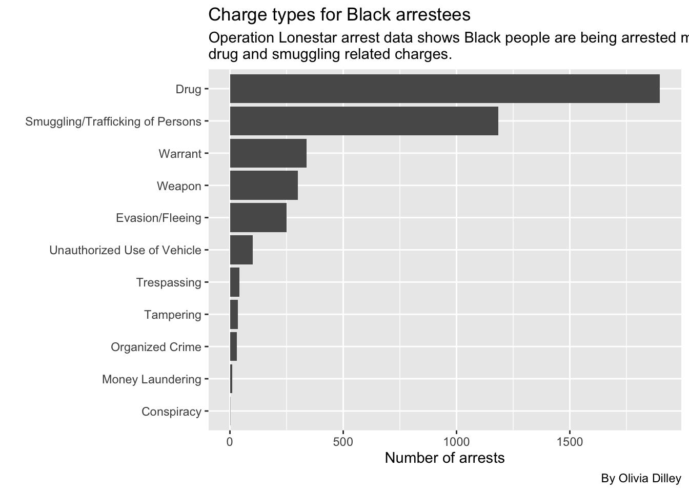
Now White arrests
whitearrests <- cat_ols |>
group_by(person_race_abbr, charge_cat) |>
filter(person_race_abbr == "W") |>
summarise(appearances = n()) |>
arrange(desc(appearances))`summarise()` has grouped output by 'person_race_abbr'. You can override using
the `.groups` argument.whitearrests# A tibble: 12 × 3
# Groups: person_race_abbr [1]
person_race_abbr charge_cat appearances
<chr> <chr> <int>
1 W Drug 5045
2 W Smuggling/Trafficking of Persons 1416
3 W Warrant 786
4 W Evasion/Fleeing 492
5 W Weapon 450
6 W Trespassing 242
7 W Unauthorized Use of Vehicle 142
8 W Tampering 127
9 W Organized Crime 70
10 W Money Laundering 41
11 W Immigration Other 6
12 W Conspiracy 5ggplot(whitearrests, aes(x = reorder(charge_cat, appearances), y = appearances)) +
geom_bar(stat = "identity") +
coord_flip() +
labs(
title = "Charge types for white arrestees",
subtitle = str_wrap("Operation Lonestar arrest data shows white people are being arrested mostly for drug and smuggling related charges."),
caption = "By Olivia Dilley",
x = "",
y = "Number of arrests"
)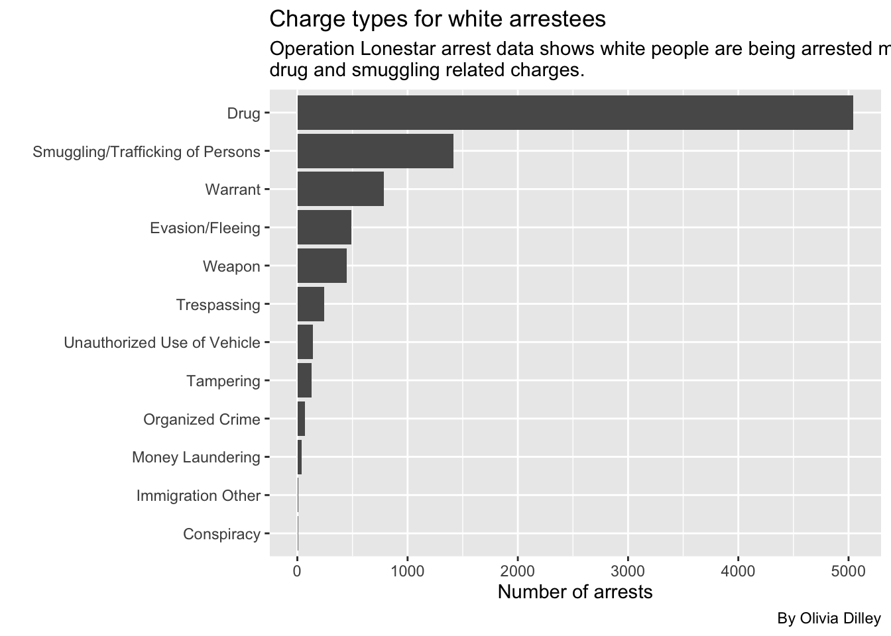
Now Hispanic arrests
hispanicarrests <- cat_ols |>
group_by(person_race_abbr, charge_cat) |>
filter(person_race_abbr == "H") |>
summarise(appearances = n()) |>
arrange(desc(appearances))`summarise()` has grouped output by 'person_race_abbr'. You can override using
the `.groups` argument.hispanicarrests# A tibble: 13 × 3
# Groups: person_race_abbr [1]
person_race_abbr charge_cat appearances
<chr> <chr> <int>
1 H Drug 15803
2 H Trespassing 11033
3 H Smuggling/Trafficking of Persons 8178
4 H Evasion/Fleeing 3814
5 H Warrant 2988
6 H Weapon 1174
7 H Unauthorized Use of Vehicle 599
8 H Tampering 530
9 H Organized Crime 215
10 H Money Laundering 126
11 H Immigration Other 123
12 H Conspiracy 14
13 H Other 5ggplot(hispanicarrests, aes(x = reorder(charge_cat, appearances), y = appearances)) +
geom_bar(stat = "identity") +
coord_flip() +
labs(
title = "Charge types for Hispanic arrestees",
subtitle = str_wrap("Operation Lonestar arrest data shows Hispanic people are being arrested mostly for drug and smuggling related charges."),
caption = "By Olivia Dilley",
x = "",
y = "Number of arrests"
)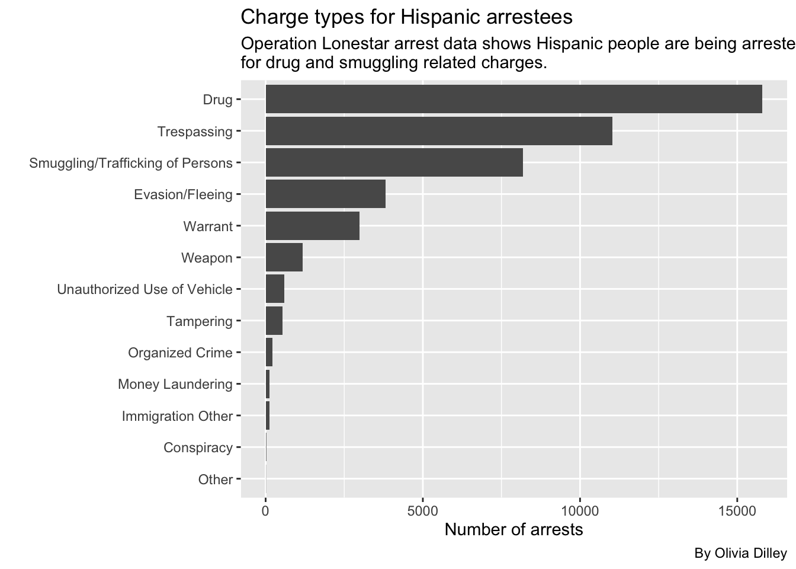
Now Asian arrests
asianarrests <- cat_ols |>
group_by(person_race_abbr, charge_cat) |>
filter(person_race_abbr == "A") |>
summarise(appearances = n()) |>
arrange(desc(appearances))`summarise()` has grouped output by 'person_race_abbr'. You can override using
the `.groups` argument.asianarrests# A tibble: 6 × 3
# Groups: person_race_abbr [1]
person_race_abbr charge_cat appearances
<chr> <chr> <int>
1 A Drug 56
2 A Smuggling/Trafficking of Persons 12
3 A Evasion/Fleeing 9
4 A Trespassing 9
5 A Warrant 7
6 A Weapon 5ggplot(asianarrests, aes(x = reorder(charge_cat, appearances), y = appearances)) +
geom_bar(stat = "identity") +
coord_flip() +
labs(
title = "Charge types for Asian arrestees",
subtitle = str_wrap("Operation Lonestar arrest data shows Asian people are being arrested mostly for drug and smuggling related charges."),
caption = "By Olivia Dilley",
x = "",
y = "Number of arrests"
)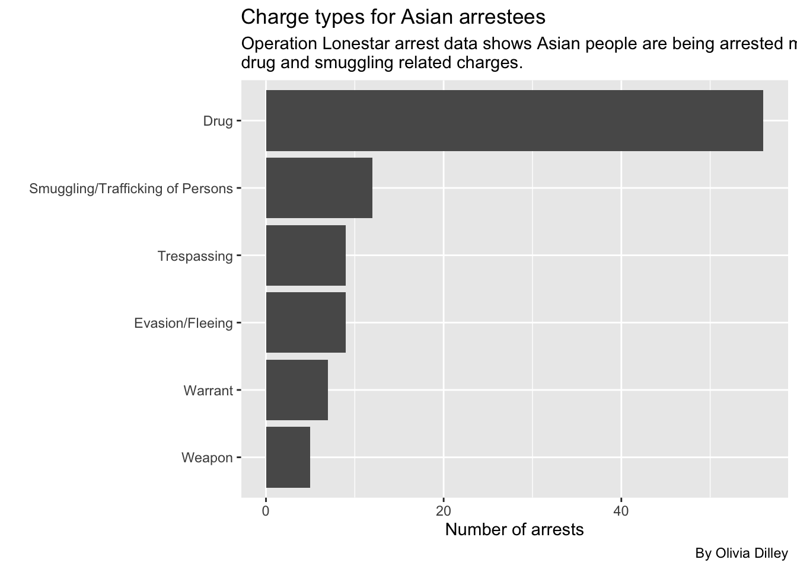
Now we’ll look at who is doing the arresting and where?
We’ll look into officers, ID, and county.
olsofficers <- olsdata |>
group_by(arresting_officer, officer_id, arrest_county) |>
summarise(appearances = n()) |>
arrange(desc(appearances))`summarise()` has grouped output by 'arresting_officer', 'officer_id'. You can
override using the `.groups` argument.olsofficers# A tibble: 7,500 × 4
# Groups: arresting_officer, officer_id [3,159]
arresting_officer officer_id arrest_county appearances
<chr> <dbl> <chr> <int>
1 <NA> 15952 Maverick 392
2 <NA> 15532 Maverick 339
3 <NA> 15834 Maverick 287
4 Derrick Hinojosa NA Cameron 278
5 <NA> 11522 Maverick 259
6 Jose Mendoza NA Cameron 233
7 <NA> 13362 Maverick 218
8 <NA> 11689 Maverick 216
9 Jose Delafuente NA Cameron 213
10 David Poland NA Nueces 210
# ℹ 7,490 more rowsWe can see that the top 3 officers are not identified by name, meaning they are from the VERSA dataset (which removed officer name identification).
Categories
Now we’ll be using those categories we made to look into the smuggling and drug categories.
Drug
Operation Lone Star focused heavily on stopping drugs from crossing the border. Lauren wanted us to look at what types of drug-related charges were happening. Because the discourse around OLS was heavily focused on Fentanyl, we focused on that to see whether or not what Abbott’s administration was saying about what OLS was accomplishing was true.
Data Takeaways for Drug Charges
At least 1,571 charges in both OLS datasets are related to possession/manufacturing of Fentanyl. This is lower than the amount of charges related to Marijuana, which are at least 9,491.
Overall, Fentanyl charges identified in this analysis account for little over 6% of all drug charges, while Marijuana charges account for little over 40% of the drug charges (from the total 23,233 drug charges identified).
Solo Drug Charges
When talking to Lauren about the importance of drug charges within Operation Lone Star, she mentioned separating solo drug charges from the data set. To do this, we filtered and looked at single drug charges in order to look at what drugs were being associated to each charge. This helps us narrow down drug charges in the analysis.
Now let’s look at the individuals being charged for drug charges:
cat_ols |> filter(charge_cat == "Drug") |> count(charge_count)# A tibble: 10 × 2
charge_count n
<dbl> <int>
1 1 22819
2 2 353
3 3 42
4 4 9
5 5 4
6 6 1
7 7 1
8 8 2
9 11 1
10 60 1Data Takeaways: Most charges are solo charges.
Now let’s look at the solo charges and what drugs they are related too.
solo_drug_ols <-
cat_ols |> group_by(charge, charge_count) |> filter(charge_cat == "Drug") |> mutate(
fentanyl = case_when(
str_detect(charge, "Fent|FENT|1-B|Schedule Ii/") ~ "YES"),
marijuana = case_when(
str_detect(charge, "Mari|MARI|Marj|MARJ|Drug Test|Schedule I/") ~ "YES"),
default. = NA,) |>
filter(charge_count == "1")
solo_drug_ols |>
count(charge, charge_count, fentanyl, marijuana)# A tibble: 230 × 5
# Groups: charge, charge_count [230]
charge charge_count fentanyl marijuana n
<chr> <dbl> <chr> <chr> <int>
1 (FENTANYL) POSS CS PG 1 <1G 1 YES <NA> 1
2 (HEROIN) POSS CS PG 1 <1G 1 <NA> <NA> 1
3 Conspiracy To Possess With Intent To D… 1 <NA> <NA> 192
4 Conspiracy To Sale/Manfct/Dist Control… 1 <NA> <NA> 121
5 Controlled Substance Offenses-Felony 1 <NA> <NA> 103
6 Controlled Substance Offenses-Misdemea… 1 <NA> <NA> 11
7 Del Marij 1/4 oz <5 lbs Use Child 1 <NA> YES 1
8 Del Marij <1/4 oz DFZ IAT 1 <NA> YES 1
9 Del Marij <= 1/4 OZ 1 <NA> YES 3
10 Del Marij <= 5 lbs > 1/4 oz 1 <NA> YES 15
# ℹ 220 more rowsNow we’ll group by what type of drug.
solo_drug_type <-
solo_drug_ols |> ungroup() |> mutate(
drug_charge_s = case_when(
str_detect(fentanyl, "YES") ~ "Fentanyl",
str_detect(marijuana, "YES") ~ "Marijuana",
.default = "Other"
)
)
solo_drug_type_chart <- solo_drug_type |> count(drug_charge_s) |>
rename(charge_count = n)
solo_drug_type_chart# A tibble: 3 × 2
drug_charge_s charge_count
<chr> <int>
1 Fentanyl 1506
2 Marijuana 9459
3 Other 11854Now we’ll make a chart to look at this data.
ggplot(solo_drug_type_chart,
aes(x = charge_count, y = drug_charge_s)
) +
geom_col() +
geom_text(aes(label = charge_count),
hjust = 1.3,
color = "white") +
labs(
title = "What do solo drug charges look like under Operation Lone Star?",
x = "Number of Charges",
y = "Type of Drug Charge",
subtitle = str_wrap(
"This analysis looked at fentanyl and marijuana related drug charges. Most drug charges were not related to either fentanyl or marijuana. However, drug charges for the same type of drug are recorded differently in the data, so further anaylsis is needed to determine if this reflects the total number for each type of drug."
),
caption = "Source = Operation Lone Star Data"
)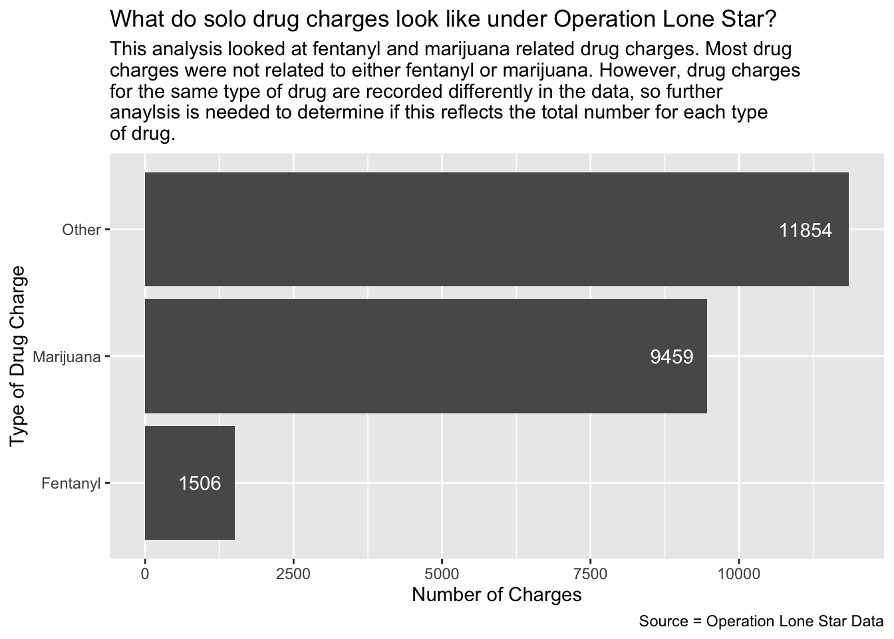
Where are solo drug charges located?
solo_drug_ols |>
group_by(arrest_county) |>
summarise(appearances = n()) |>
arrange(desc(appearances))# A tibble: 64 × 2
arrest_county appearances
<chr> <int>
1 Hidalgo 3568
2 Cameron 2291
3 Starr 1422
4 El Paso 1373
5 Webb 1096
6 Ector 1084
7 San Patricio 959
8 Tom Green 800
9 Pecos 740
10 Uvalde 708
# ℹ 54 more rowsLet’s look at Ector, the 6th county with the most solo drug charges not on the border.
ector_example <-
solo_drug_ols |> ungroup() |> filter(arrest_county == "Ector") |> mutate(
drug_charge_s = case_when(
str_detect(fentanyl, "YES") ~ "fentanyl",
str_detect(marijuana, "YES") ~ "marijuana",
.default = "other"
)
)
ector_example |> count(drug_charge_s)# A tibble: 3 × 2
drug_charge_s n
<chr> <int>
1 fentanyl 72
2 marijuana 404
3 other 608Data Takeaway: Most of the solo drug charges in Ector county are unrelated to fentanyl. Notably, Odessa is inside Ector county.
Smuggling
Breaking down the Smuggling charge category
Lauren has a theory that Black people in areas like Houston are being tricked into smuggling people across the border. We want to look at the smuggling category and break down how many offenses are from Black people and where those offenses took place so we can test that theory.
First we’ll look at the smuggling charges for all races and tally them to see who is getting arrested for smuggling the most.
cat_ols |>
group_by(person_race_abbr, charge_cat) |>
filter(charge_cat == "Smuggling/Trafficking of Persons") |>
summarise(appearances = n()) |>
arrange(desc(appearances))`summarise()` has grouped output by 'person_race_abbr'. You can override using
the `.groups` argument.# A tibble: 6 × 3
# Groups: person_race_abbr [6]
person_race_abbr charge_cat appearances
<chr> <chr> <int>
1 H Smuggling/Trafficking of Persons 8178
2 W Smuggling/Trafficking of Persons 1416
3 B Smuggling/Trafficking of Persons 1184
4 <NA> Smuggling/Trafficking of Persons 173
5 A Smuggling/Trafficking of Persons 12
6 U Smuggling/Trafficking of Persons 2Lauren thinks this number of Black smuggling offenses is still substantial for Texas’ population demographics, despite it only being 3rd highest behind Hispanic and White.
Smuggling by county and race
Let’s look at all races smuggling charges by county to see how many smuggling charges there are for each race in each specific county.
smuggle_ols <- cat_ols |>
group_by(person_race_abbr, charge_cat, arrest_county) |>
summarise(appearances = n()) |>
arrange(desc(appearances)) |>
filter(charge_cat == "Smuggling/Trafficking of Persons") |>
select(!charge_cat)`summarise()` has grouped output by 'person_race_abbr', 'charge_cat'. You can
override using the `.groups` argument.
Adding missing grouping variables: `charge_cat`smuggle_ols# A tibble: 163 × 4
# Groups: person_race_abbr, charge_cat [6]
charge_cat person_race_abbr arrest_county appearances
<chr> <chr> <chr> <int>
1 Smuggling/Trafficking of Persons H Kinney 1347
2 Smuggling/Trafficking of Persons H El Paso 1230
3 Smuggling/Trafficking of Persons H Hidalgo 884
4 Smuggling/Trafficking of Persons H Webb 555
5 Smuggling/Trafficking of Persons H Val Verde 492
6 Smuggling/Trafficking of Persons H Uvalde 486
7 Smuggling/Trafficking of Persons H Maverick 475
8 Smuggling/Trafficking of Persons B Kinney 448
9 Smuggling/Trafficking of Persons H Zavala 399
10 Smuggling/Trafficking of Persons W Kinney 305
# ℹ 153 more rowsThe most common is Hispanic people smuggling in areas near the border, like Kinney and El Paso county. Black smuggling in Kinney is also in the top 10.
Breaking down the Black smuggling category by county to test Lauren’s theory
Let’s break down the smuggling category by county for Black offenders to see where they are most commonly being arrested (not where they are from necessarily).
b_smuggling <- cat_ols |>
group_by(arrest_county, arrest_state, person_race_abbr, charge_cat) |>
filter(person_race_abbr == "B", charge_cat == "Smuggling/Trafficking of Persons") |>
summarise(appearances = n()) |>
arrange(desc(appearances))`summarise()` has grouped output by 'arrest_county', 'arrest_state',
'person_race_abbr'. You can override using the `.groups` argument.b_smuggling# A tibble: 38 × 5
# Groups: arrest_county, arrest_state, person_race_abbr [38]
arrest_county arrest_state person_race_abbr charge_cat appearances
<chr> <chr> <chr> <chr> <int>
1 Kinney TEXAS B Smuggling/Traffickin… 448
2 Val Verde TEXAS B Smuggling/Traffickin… 130
3 Maverick TEXAS B Smuggling/Traffickin… 109
4 Uvalde TEXAS B Smuggling/Traffickin… 94
5 Zavala TEXAS B Smuggling/Traffickin… 73
6 Edwards TEXAS B Smuggling/Traffickin… 66
7 Dimmit TEXAS B Smuggling/Traffickin… 48
8 Sutton TEXAS B Smuggling/Traffickin… 34
9 El Paso TEXAS B Smuggling/Traffickin… 23
10 La Salle TEXAS B Smuggling/Traffickin… 22
# ℹ 28 more rowsWe’ll make a graph for this to visualize it better.
ggplot(b_smuggling, aes(x = reorder(arrest_county, appearances), y = appearances)) +
geom_bar(stat = "identity") +
coord_flip() +
labs(
title = "Black smuggling arrests by county",
subtitle = str_wrap("Operation Lonestar arrest data shows Black people are being arrested for smuggling charges in these counties."),
caption = "By Olivia Dilley",
x = "",
y = "Number of arrests"
)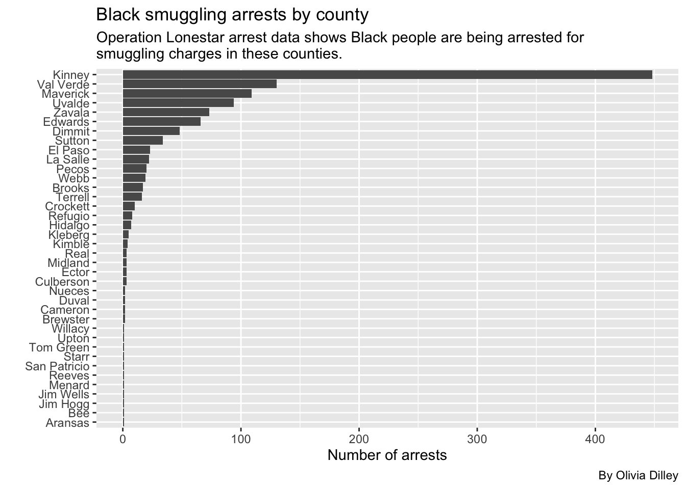
Now let’s see the breakdowns for other races, starting with white smuggling arrests.
w_smuggling <- cat_ols |>
group_by(arrest_county, arrest_state, person_race_abbr, charge_cat) |>
filter(person_race_abbr == "W", charge_cat == "Smuggling/Trafficking of Persons") |>
summarise(appearances = n()) |>
arrange(desc(appearances))`summarise()` has grouped output by 'arrest_county', 'arrest_state',
'person_race_abbr'. You can override using the `.groups` argument.w_smuggling# A tibble: 47 × 5
# Groups: arrest_county, arrest_state, person_race_abbr [47]
arrest_county arrest_state person_race_abbr charge_cat appearances
<chr> <chr> <chr> <chr> <int>
1 Kinney TEXAS W Smuggling/Traffickin… 305
2 El Paso TEXAS W Smuggling/Traffickin… 230
3 Hidalgo TEXAS W Smuggling/Traffickin… 113
4 Val Verde TEXAS W Smuggling/Traffickin… 104
5 Maverick TEXAS W Smuggling/Traffickin… 87
6 Uvalde TEXAS W Smuggling/Traffickin… 79
7 Zavala TEXAS W Smuggling/Traffickin… 70
8 Edwards TEXAS W Smuggling/Traffickin… 50
9 Webb TEXAS W Smuggling/Traffickin… 45
10 Dimmit TEXAS W Smuggling/Traffickin… 43
# ℹ 37 more rowsAnd we’ll make a plot for this too.
ggplot(w_smuggling, aes(x = reorder(arrest_county, appearances), y = appearances)) +
geom_bar(stat = "identity") +
coord_flip() +
labs(
title = "White smuggling arrests by county",
subtitle = str_wrap("Operation Lonestar arrest data shows white people are being arrested for smuggling charges in these counties."),
caption = "By Olivia Dilley",
x = "",
y = "Number of arrests"
)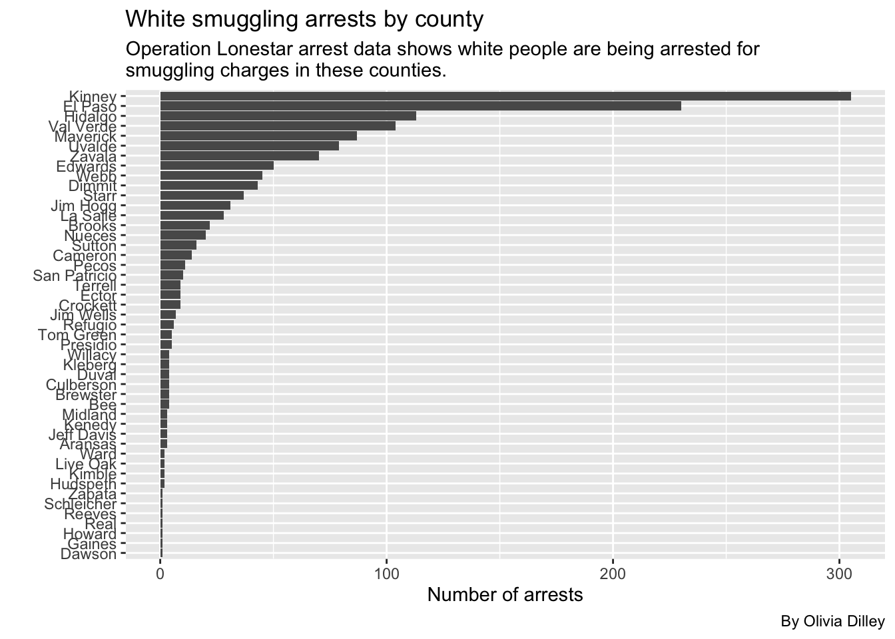
Now let’s see the Hispanic breakdown.
h_smuggling <- cat_ols |>
group_by(arrest_county, arrest_state, person_race_abbr, charge_cat) |>
filter(person_race_abbr == "H", charge_cat == "Smuggling/Trafficking of Persons") |>
summarise(appearances = n()) |>
arrange(desc(appearances))`summarise()` has grouped output by 'arrest_county', 'arrest_state',
'person_race_abbr'. You can override using the `.groups` argument.h_smuggling# A tibble: 46 × 5
# Groups: arrest_county, arrest_state, person_race_abbr [46]
arrest_county arrest_state person_race_abbr charge_cat appearances
<chr> <chr> <chr> <chr> <int>
1 Kinney TEXAS H Smuggling/Traffickin… 1347
2 El Paso TEXAS H Smuggling/Traffickin… 1230
3 Hidalgo TEXAS H Smuggling/Traffickin… 884
4 Webb TEXAS H Smuggling/Traffickin… 555
5 Val Verde TEXAS H Smuggling/Traffickin… 492
6 Uvalde TEXAS H Smuggling/Traffickin… 486
7 Maverick TEXAS H Smuggling/Traffickin… 475
8 Zavala TEXAS H Smuggling/Traffickin… 399
9 Starr TEXAS H Smuggling/Traffickin… 267
10 Edwards TEXAS H Smuggling/Traffickin… 251
# ℹ 36 more rowsNow we’ll make a plot.
ggplot(h_smuggling, aes(x = reorder(arrest_county, appearances), y = appearances)) +
geom_bar(stat = "identity") +
coord_flip() +
labs(
title = "Hispanic smuggling arrests by county",
subtitle = str_wrap("Operation Lonestar arrest data shows Hispanic people are being arrested for smuggling charges in these counties."),
caption = "By Olivia Dilley",
x = "",
y = "Number of arrests"
)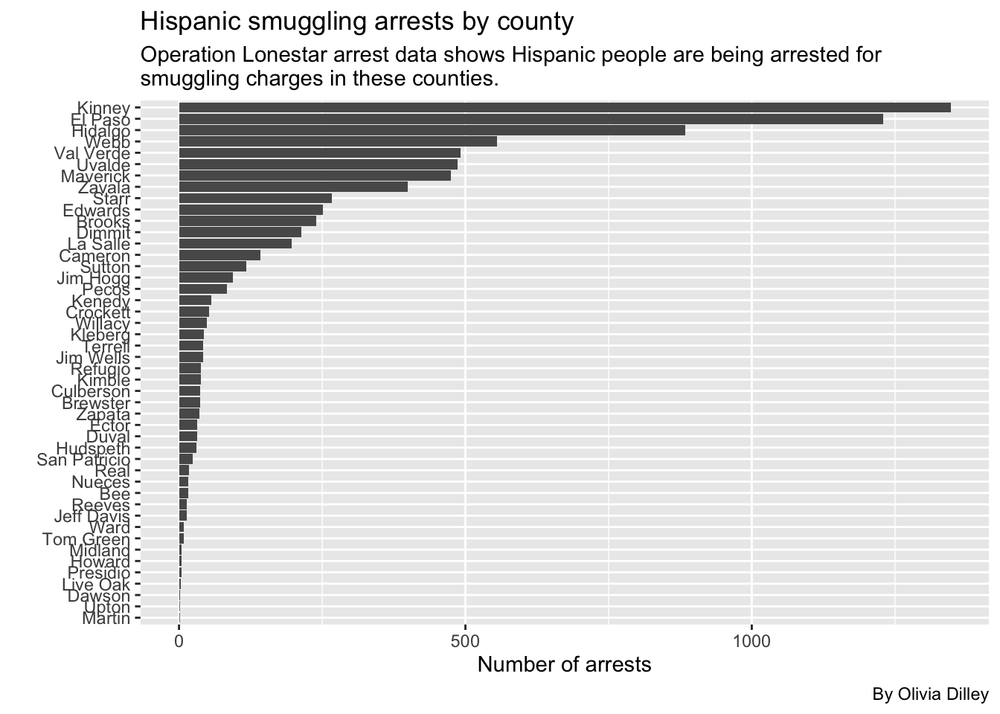
Kinney
Across the board, Kinney has the highest smuggling arrests in each race, so it doesn’t seem like Black arrests are more common there than any other race. Regardless, we looked into the breakdown of arrests in Kinney county for Black people charged with smuggling crimes just to see if anything stuck out.
kinney_b_smuggling <- cat_ols |>
group_by(arrest_county, arrest_state, person_race_abbr, charge_cat) |>
filter(arrest_county == "Kinney", person_race_abbr == "B", charge_cat == "Smuggling/Trafficking of Persons")
kinney_b_smuggling# A tibble: 448 × 26
# Groups: arrest_county, arrest_state, person_race_abbr, charge_cat [1]
primary_key charge charge_count ethnicity charge_date person_age
<chr> <chr> <dbl> <chr> <date> <dbl>
1 TX202356 Smuggling of Perso… 5 N 2023-01-21 30
2 TX202356 Smuggling of Perso… 2 N 2023-01-21 30
3 TX2023105 Smuggling of Perso… 3 N 2023-02-06 27
4 TX2023288 Smuggling of Perso… 1 N 2023-02-24 21
5 TX2023289 Smuggling of Perso… 1 N 2023-02-24 22
6 TX2023291 Smuggling of Perso… 3 N 2023-02-24 20
7 TX2023355 Smuggling of Perso… 4 N 2023-02-25 NA
8 TX2023437 Smuggling of Perso… 5 N 2023-02-14 42
9 TX2023479 Smuggling of Perso… 5 N 2023-03-04 NA
10 TX2023916 Smuggling of Perso… 7 N 2023-03-18 38
# ℹ 438 more rows
# ℹ 20 more variables: person_first_name <chr>, person_second_name <chr>,
# person_third_name <chr>, person_last_name <chr>, officer_id <dbl>,
# arrest_county <chr>, code <chr>, severity_code <chr>,
# severity_code_clean <chr>, person_race_abbr <chr>,
# person_gender_abbr <chr>, arrest_state <chr>, arrest_division <chr>,
# arrest_id <dbl>, arrest_urn <chr>, arresting_officer <chr>, …We can make a plot to look into the arrests over time to see if any dates had a much higher number of arrests than others.
ggplot(kinney_b_smuggling, aes(x=charge_date, y=charge_count)) +
geom_line() +
labs(
title = "Black smuggling arrests over time in Kinney County",
subtitle = str_wrap("Operation Lonestar arrest data shows Black people are being arrested in Kinney for smuggling charges 4x as much as in any other county in OLS parameters. This breakdown shows those arrests over time."),
caption = "By Olivia Dilley",
x = "Date",
y = "Charges"
)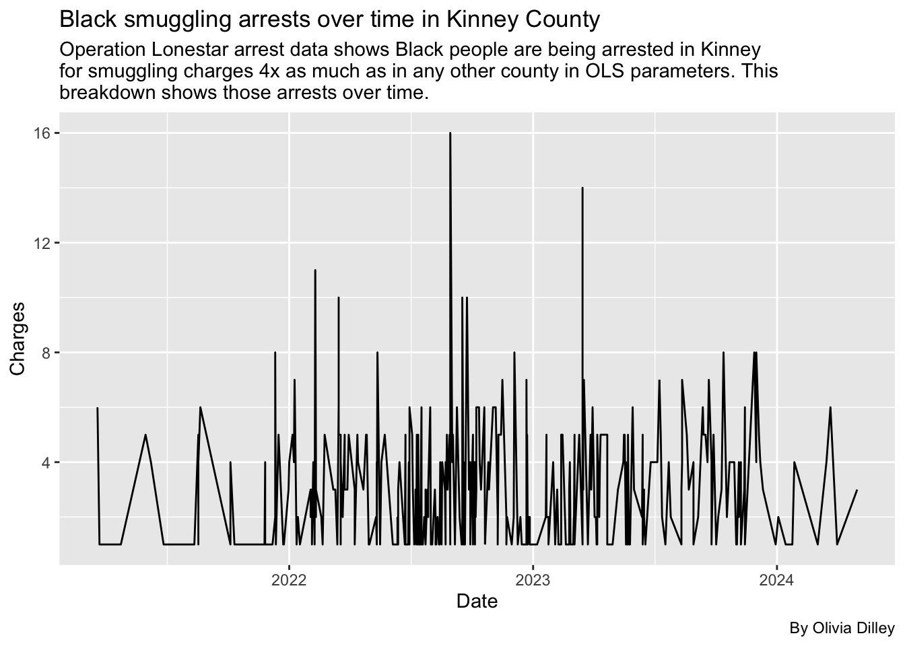
Because Kinney is the highest across all races, and the arrests don’t very super significantly over time, we didn’t see anything stand out from the data.
Let’s compare percentages of arrests by races with tabyls
We’ll make some tables where we can look at percentages of arrests by race for each county, officers, etc.
County and race tabyl
In this table we’ll look at arrest county and race to see if any counties have higher percentages of Black arrests in general (not just smuggling arrests).
olsdata |>
tabyl(arrest_county, person_race_abbr) |>
adorn_percentages() |>
adorn_pct_formatting() |>
adorn_ns() arrest_county A B H I U
Andrews 0.0% (0) 12.4% (23) 56.5% (105) 0.0% (0) 0.0% (0)
Aransas 0.0% (0) 4.0% (14) 38.9% (136) 0.0% (0) 0.0% (0)
Bee 0.0% (0) 7.6% (30) 68.6% (271) 0.0% (0) 0.0% (0)
Borden 0.0% (0) 20.0% (1) 40.0% (2) 0.0% (0) 0.0% (0)
Brewster 0.6% (2) 12.3% (43) 45.3% (158) 0.0% (0) 0.0% (0)
Brooks 0.3% (3) 6.3% (62) 81.6% (806) 0.0% (0) 0.2% (2)
Cameron 0.1% (2) 1.4% (46) 84.9% (2,756) 0.0% (0) 0.0% (0)
Coke 0.0% (0) 31.0% (13) 42.9% (18) 0.0% (0) 0.0% (0)
Concho 1.8% (1) 14.0% (8) 33.3% (19) 0.0% (0) 0.0% (0)
Crane 0.0% (0) 23.5% (4) 64.7% (11) 0.0% (0) 0.0% (0)
Crockett 0.0% (0) 19.8% (68) 58.0% (199) 0.0% (0) 0.0% (0)
Culberson 0.8% (3) 19.6% (72) 54.1% (199) 0.3% (1) 0.8% (3)
Dawson 0.8% (1) 14.6% (19) 69.2% (90) 0.0% (0) 0.0% (0)
Dimmit 0.0% (0) 13.2% (116) 68.9% (604) 0.0% (0) 0.0% (0)
Duval 0.0% (0) 2.9% (6) 76.2% (157) 0.0% (0) 0.0% (0)
Ector 0.3% (5) 10.0% (193) 59.6% (1,150) 0.1% (1) 0.0% (0)
Edwards 0.2% (1) 18.4% (105) 63.5% (362) 0.0% (0) 0.0% (0)
El Paso 0.0% (1) 3.3% (131) 74.0% (2,942) 0.0% (0) 0.0% (1)
Gaines 0.0% (0) 11.5% (6) 53.8% (28) 0.0% (0) 0.0% (0)
Glasscock 0.0% (0) 25.0% (1) 75.0% (3) 0.0% (0) 0.0% (0)
Hidalgo 0.0% (3) 0.9% (57) 82.9% (5,334) 0.0% (0) 0.0% (0)
Howard 0.0% (0) 23.1% (42) 46.7% (85) 0.0% (0) 0.0% (0)
Hudspeth 0.0% (0) 19.1% (70) 51.6% (189) 0.0% (0) 0.0% (0)
Irion 0.0% (0) 0.0% (0) 40.0% (2) 0.0% (0) 0.0% (0)
Jeff Davis 0.0% (0) 21.3% (19) 58.4% (52) 0.0% (0) 0.0% (0)
Jim Hogg 0.0% (0) 0.7% (7) 79.2% (805) 0.0% (0) 0.0% (0)
Jim Wells 0.2% (1) 3.0% (16) 82.7% (444) 0.0% (0) 0.0% (0)
Kenedy 0.8% (2) 11.0% (28) 71.8% (183) 0.0% (0) 0.0% (0)
Kimble 0.0% (0) 24.2% (62) 51.2% (131) 0.0% (0) 0.0% (0)
Kinney 0.1% (5) 9.2% (663) 82.8% (5,981) 0.0% (0) 0.0% (2)
Kleberg 0.4% (3) 14.0% (97) 73.4% (510) 0.0% (0) 0.0% (0)
La Salle 0.3% (2) 10.3% (81) 75.9% (596) 0.0% (0) 0.0% (0)
Live Oak 0.0% (0) 10.7% (41) 64.7% (247) 0.0% (0) 0.0% (0)
Loving 0.0% (0) 0.0% (0) 25.0% (1) 0.0% (0) 0.0% (0)
Martin 0.0% (0) 34.5% (19) 45.5% (25) 0.0% (0) 0.0% (0)
Mason 0.0% (0) 12.0% (3) 44.0% (11) 0.0% (0) 0.0% (0)
Maverick 0.2% (15) 2.9% (216) 91.7% (6,836) 0.0% (0) 0.8% (57)
Mcculloch 0.0% (0) 13.7% (13) 24.2% (23) 0.0% (0) 0.0% (0)
McCulloch 2.2% (1) 22.2% (10) 28.9% (13) 0.0% (0) 0.0% (0)
Menard 0.0% (0) 36.4% (4) 36.4% (4) 0.0% (0) 0.0% (0)
Midland 0.3% (3) 18.4% (197) 53.6% (572) 0.0% (0) 0.0% (0)
Nueces 0.5% (5) 8.0% (81) 60.1% (608) 0.0% (0) 0.0% (0)
Pecos 0.2% (2) 22.3% (250) 54.1% (605) 0.0% (0) 0.0% (0)
Presidio 0.0% (0) 2.0% (2) 66.3% (65) 0.0% (0) 0.0% (0)
Reagan 0.0% (0) 8.3% (2) 50.0% (12) 0.0% (0) 0.0% (0)
Real 0.0% (0) 5.5% (3) 70.9% (39) 0.0% (0) 0.0% (0)
Reeves 0.0% (0) 18.8% (70) 56.8% (212) 0.0% (0) 0.0% (0)
Refugio 0.0% (0) 20.3% (52) 60.5% (155) 0.0% (0) 0.0% (0)
San Patricio 1.1% (14) 8.4% (107) 61.6% (789) 0.0% (0) 0.0% (0)
Schleicher 0.0% (0) 26.7% (4) 33.3% (5) 0.0% (0) 0.0% (0)
Starr 0.1% (2) 0.9% (21) 86.3% (2,015) 0.0% (0) 0.0% (0)
Sterling 0.0% (0) 14.3% (7) 71.4% (35) 0.0% (0) 0.0% (0)
Sutton 2.3% (8) 21.0% (73) 60.9% (212) 0.0% (0) 0.0% (0)
Terrell 0.0% (0) 20.1% (30) 67.8% (101) 0.0% (0) 0.0% (0)
Tom Green 0.8% (9) 15.6% (181) 42.2% (490) 0.0% (0) 0.0% (0)
Upton 0.0% (0) 20.0% (9) 48.9% (22) 0.0% (0) 0.0% (0)
Uvalde 0.0% (0) 9.2% (175) 71.7% (1,366) 0.0% (0) 0.0% (0)
Val Verde 0.0% (0) 11.9% (219) 75.1% (1,382) 0.0% (0) 0.0% (0)
Ward 0.0% (0) 16.7% (34) 57.8% (118) 0.0% (0) 0.0% (0)
Webb 0.1% (3) 1.6% (54) 86.2% (2,918) 0.0% (0) 0.0% (0)
Willacy 0.0% (0) 10.8% (41) 71.4% (270) 0.0% (0) 0.0% (0)
Winkler 0.0% (0) 18.1% (13) 48.6% (35) 0.0% (0) 1.4% (1)
Zapata 0.0% (0) 0.8% (2) 91.1% (224) 0.0% (0) 0.0% (0)
Zavala 0.1% (1) 12.5% (151) 71.3% (864) 0.0% (0) 0.1% (1)
W NA_
31.2% (58) 0.0% (0)
56.6% (198) 0.6% (2)
23.8% (94) 0.0% (0)
40.0% (2) 0.0% (0)
38.7% (135) 3.2% (11)
10.0% (99) 1.6% (16)
11.9% (386) 1.7% (56)
26.2% (11) 0.0% (0)
49.1% (28) 1.8% (1)
11.8% (2) 0.0% (0)
19.8% (68) 2.3% (8)
24.5% (90) 0.0% (0)
14.6% (19) 0.8% (1)
16.3% (143) 1.5% (13)
20.4% (42) 0.5% (1)
29.1% (562) 1.0% (20)
17.2% (98) 0.7% (4)
18.2% (723) 4.4% (175)
34.6% (18) 0.0% (0)
0.0% (0) 0.0% (0)
14.7% (947) 1.4% (92)
28.0% (51) 2.2% (4)
26.8% (98) 2.5% (9)
40.0% (2) 20.0% (1)
20.2% (18) 0.0% (0)
19.3% (196) 0.8% (8)
12.7% (68) 1.5% (8)
15.7% (40) 0.8% (2)
23.0% (59) 1.6% (4)
7.3% (527) 0.7% (48)
11.7% (81) 0.6% (4)
11.5% (90) 2.0% (16)
23.3% (89) 1.3% (5)
75.0% (3) 0.0% (0)
20.0% (11) 0.0% (0)
44.0% (11) 0.0% (0)
3.8% (287) 0.6% (47)
61.1% (58) 1.1% (1)
46.7% (21) 0.0% (0)
27.3% (3) 0.0% (0)
26.3% (281) 1.4% (15)
27.6% (279) 3.8% (38)
22.3% (250) 1.1% (12)
28.6% (28) 3.1% (3)
29.2% (7) 12.5% (3)
23.6% (13) 0.0% (0)
21.2% (79) 3.2% (12)
16.8% (43) 2.3% (6)
28.4% (364) 0.5% (7)
40.0% (6) 0.0% (0)
11.5% (268) 1.2% (29)
14.3% (7) 0.0% (0)
15.2% (53) 0.6% (2)
12.1% (18) 0.0% (0)
40.5% (470) 0.9% (11)
31.1% (14) 0.0% (0)
17.6% (336) 1.4% (27)
12.1% (223) 0.8% (15)
24.0% (49) 1.5% (3)
9.1% (307) 3.1% (104)
17.2% (65) 0.5% (2)
31.9% (23) 0.0% (0)
8.1% (20) 0.0% (0)
15.1% (183) 0.9% (11)Since none of the percentages of Black arrests are greater than 25% and there are only 7 categories, it doesn’t seem like there is any one county that is arresting more Black people than other races at a significant rate.
Smuggling arrests by race and county %
We’ll now look specifically into the percentages of smuggling arrests to see if any county is arresting Black people for smuggling more than other races.
*** NOTE TO SELF: THIS DOESN’T WORK. It should add up to 100% down each column but it doesn’t. ***
cat_ols |>
filter(charge_cat == "Smuggling/Trafficking of Persons") |>
tabyl(person_race_abbr, arrest_county) |>
adorn_percentages() |>
adorn_pct_formatting() |>
tibble()# A tibble: 6 × 52
person_race_abbr Aransas Bee Brewster Brooks Cameron Crockett Culberson
<chr> <chr> <chr> <chr> <chr> <chr> <chr> <chr>
1 A 0.0% 0.0% 0.0% 0.0% 0.0% 0.0% 0.0%
2 B 0.1% 0.1% 0.2% 1.4% 0.2% 0.8% 0.3%
3 H 0.0% 0.2% 0.5% 2.9% 1.7% 0.6% 0.5%
4 U 0.0% 0.0% 0.0% 0.0% 0.0% 0.0% 0.0%
5 W 0.2% 0.3% 0.3% 1.6% 1.0% 0.6% 0.3%
6 <NA> 0.0% 0.0% 0.0% 4.0% 1.7% 0.6% 0.0%
# ℹ 44 more variables: Dawson <chr>, Dimmit <chr>, Duval <chr>, Ector <chr>,
# Edwards <chr>, `El Paso` <chr>, Gaines <chr>, Hidalgo <chr>, Howard <chr>,
# Hudspeth <chr>, `Jeff Davis` <chr>, `Jim Hogg` <chr>, `Jim Wells` <chr>,
# Kenedy <chr>, Kimble <chr>, Kinney <chr>, Kleberg <chr>, `La Salle` <chr>,
# `Live Oak` <chr>, Martin <chr>, Maverick <chr>, Menard <chr>,
# Midland <chr>, Nueces <chr>, Pecos <chr>, Presidio <chr>, Reagan <chr>,
# Real <chr>, Reeves <chr>, Refugio <chr>, `San Patricio` <chr>, …Looking into specific officers
Let’s see if any officers stick out as arresting more Black people than other races. We’ll filter their arrests to be more than 100 so we can ensure that there are a large # of arrests by a specific officer in general. (Otherwise findings wouldn’t be very significant.)
olsdata |>
tabyl(arresting_officer, person_race_abbr) |>
adorn_totals("col", name = "col_total") |>
adorn_totals("row") |>
tibble() |>
arrange(desc(col_total)) |>
filter(col_total > 100)# A tibble: 63 × 9
arresting_officer A B H I U W NA_ col_total
<chr> <dbl> <dbl> <dbl> <dbl> <dbl> <dbl> <dbl> <dbl>
1 Total 98 4187 44602 2 67 8822 857 58635
2 <NA> 98 1034 14302 2 67 1753 0 17256
3 Derrick Hinojosa 0 2 296 0 0 42 0 340
4 Jose Mendoza 0 2 269 0 0 45 6 322
5 David Poland 0 32 79 0 0 143 34 288
6 Juan Sauceda 0 3 210 0 0 26 3 242
7 Jose Delafuente 0 1 217 0 0 17 6 241
8 Arnold Rodriguez 0 0 197 0 0 11 7 215
9 Sarah Oranday 0 28 159 0 0 25 0 212
10 Alejandro Morante 0 28 117 0 0 51 1 197
# ℹ 53 more rowsThis also doesn’t look super indicative of anything.